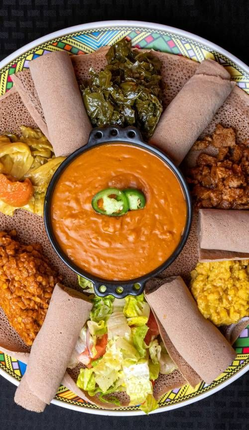

East Africa

Food Culture
East African meals are hearty, filling and made to share. Each country has its own signature dish, but many follow the same pattern: a rich sauce, stew or fried meat served with a starchy side. Ugali, a stiff maize meal, is a staple in all five countries covered in the video below (Kenya, Uganda, Tanzania, Rwanda and Burundi). Some dishes are everyday comfort food, like beans and sweet potatoes, while others are ceremonial: in Rwanda, akabenzi (fried pork with plantain) is served at weddings and other celebrations. Street food is also loved, such as Tanzania's chips mayai (fries with eggs).
Staple Foods
- Ugali (maize meal)
- Beans
- Sweet potatoes
- Matoke (green bananas)
- Plantain
- Groundnuts (peanuts)
- Pumpkin
- Chapati
- Teff
- Cassava leaves
Cooking Techniques
- Pre-boiling: in Burundi, beans are boiled briefly first, then finished in a pot with sweet potatoes so the flavours blend. Fried onions and tomatoes are added to the boiling beans.
- Making peanut sauce from scratch: in Uganda, raw peanuts are ground and stirred into fried onion and tomato until thick. It is done when the spoon looks shiny and oil starts to separate. This peanut sauce is served with beef and matoke.
- Boiling matoke in its skin: the skin comes off easily once the bananas are boiled.
- Double cooking: in Rwanda, pork is boiled, then deep-fried, then stewed with garlic, onion, green pepper, tomato paste, soy sauce and a squeeze of lemon. Fried plantain is added at the end.
- Frying and baking street food: Tanzanian chips mayai is fries topped with fried egg, then put in the oven to dry on top.
- Curry with coconut: in Kenya, chicken curry is simmered with tomatoes and onions, finished with coconut cream and coriander, and served with soft pumpkin chapati.
- Fermenting: teff batter is left to ferment for days to make the starter for injera.
Example Dishes
-
Injera
Soft, tangy teff flatbread from Ethiopia. View the recipe
-
Isombe
Rwandan cassava leaves cooked with groundnuts. View the recipe
-
Akabenzi
A Rwandan ceremonial dish of boiled and fried pork with plantain, served with ugali.
-
Pumpkin chapati with chicken curry
Soft chapati made with pumpkin, served with a coconut chicken curry from Kenya.
-
Matoke with peanut sauce
Ugandan green bananas served with beef in a thick peanut sauce.
-
Beans and sweet potatoes
A hearty Burundian dish of beans and sweet potatoes cooked together.
-
Chips mayai
A Tanzanian street food of fries cooked into a fried egg.
Video: Battle of the East African Dishes
In the video, the creator ranks the five dishes by taste. Rwanda's akabenzi comes first, followed by Kenya, Uganda, Burundi and Tanzania.